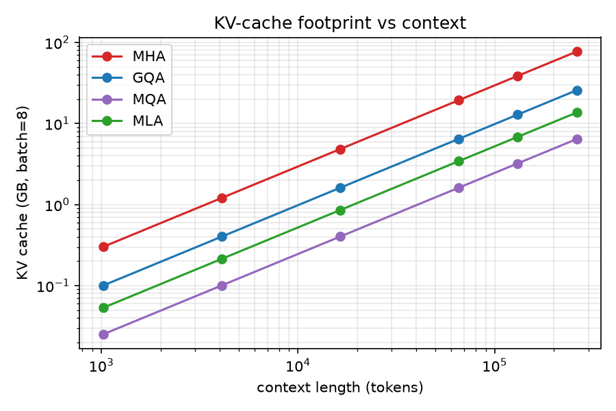
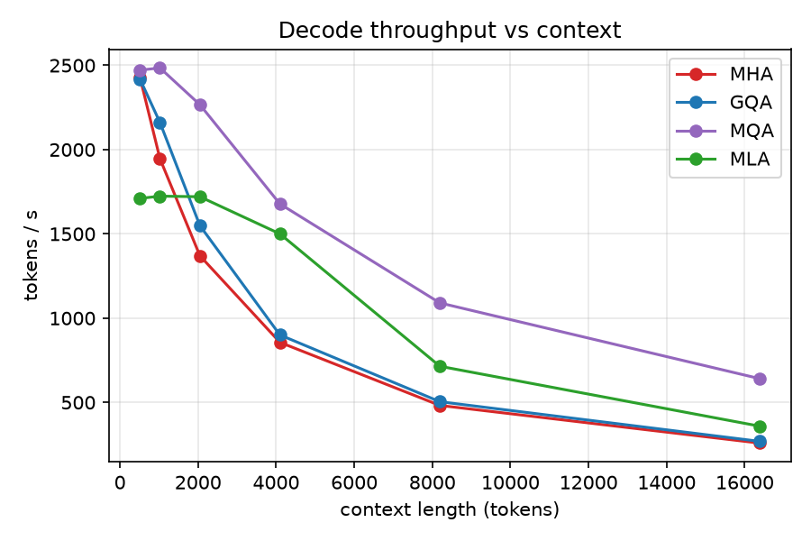
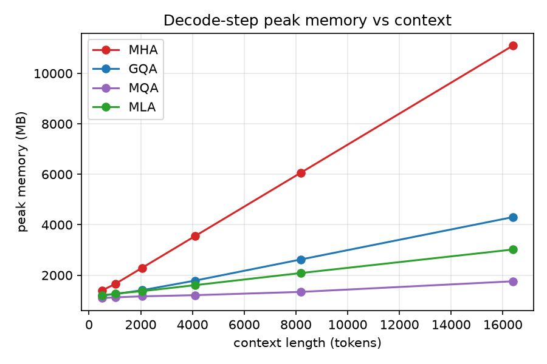
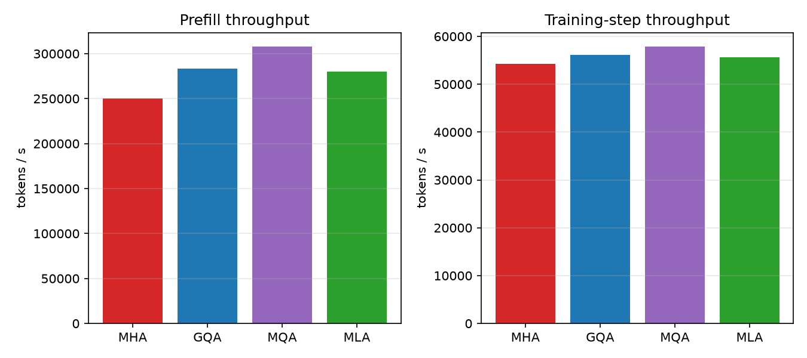

The key–value (KV) cache, not the parameter count, is what bounds long-context inference on a single GPU. We isolate the effect of the attention mechanism on this trade-off by training a from-scratch, 124M-parameter GPT in which the backbone, RoPE positional encoding, optimizer, data, and token budget are held fixed, and only the attention module varies across standard Multi-Head Attention (MHA), Multi-Query Attention (MQA), Grouped-Query Attention (GQA), and DeepSeek-V2 Multi-head Latent Attention (MLA). On a single RTX 4080 Super (16 GB) we report both efficiency (KV-cache footprint, decode latency, peak memory, prefill/train throughput, and maximum attainable context) and quality (validation perplexity, bits-per-byte). MLA compresses the KV cache 5.6× relative to MHA while keeping per-token decode memory close to MQA, and—via weight absorption—delivers decode throughput that overtakes MHA and GQA at long context. Quality results from the controlled sweeps are reported in §6.
Autoregressive decoding stores one key and one value vector per attended token, per layer—the KV cache. Its size grows linearly with context length and, at long context, dominates both the memory budget and the memory-bandwidth cost of each decode step. A 124M MHA model in this study needs 38.6 GB of KV cache to decode a single 128k-token context at batch 8—more than twice the 16 GB of the GPU it was trained on. The attention mechanism is therefore the lever that decides whether long-context inference is feasible on commodity hardware at all.
MQA and GQA shrink the cache by sharing key/value heads, trading representational capacity for memory. MLA takes a different route: it caches a low-rank latent from which per-head keys and values are reconstructed on the fly, plus a small decoupled key that carries rotary position information. The open question this study targets: at a fixed compute and parameter budget, how much quality does each cache-reduction strategy actually cost, and what does each buy back in inference efficiency?
Public comparisons usually confound the attention mechanism with changes in depth, width, data, or training recipe. We remove that confound. Every variant here shares an identical 12-layer / 768-width / 12-head backbone, identical RoPE, identical SwiGLU MLP, identical optimizer and schedule, and the same token budget. The attention module is the sole independent variable.
All variants share the same per-head dimension $d_h = d_\text{model}/n_h = 64$ and the same RoPE applied to queries and keys. They differ only in what gets cached. With $L$ layers and 2-byte (bf16) elements, the KV cache per token is:
| Variant | Cached per token / layer | Bytes/token (this study, $L{=}12$) | vs MHA |
|---|---|---|---|
| MHA | $2\,n_h\,d_h$ | 36,864 | 1.0× |
| GQA ($g{=}4$) | $2\,g\,d_h$ | 12,288 | 3.0× |
| MLA | $d_c + d_\text{rope}$ | 6,528 | 5.6× |
| MQA | $2\,d_h$ | 3,072 | 12.0× |
MHA caches a full key and value for each of $n_h$ heads. MQA collapses these to a single shared KV head, and GQA interpolates with $g$ groups. MLA instead caches a compressed latent $\mathbf{c}^{KV}\!\in\!\mathbb{R}^{d_c}$ ($d_c=256$ here) and a single decoupled RoPE key $\mathbf{k}^{R}\!\in\!\mathbb{R}^{d_\text{rope}}$ ($d_\text{rope}=16$), shared across heads—so its cache width is $d_c + d_\text{rope}$ regardless of head count.
MLA (DeepSeek-V2) factors the KV path through a low-rank bottleneck. From hidden state $\mathbf{h}_t$ it computes a down-projection to the cached latent and a decoupled rotary key:
$$\mathbf{c}^{KV}_t = W^{DKV}\mathbf{h}_t \in \mathbb{R}^{d_c}, \qquad \mathbf{k}^{R}_t = \mathrm{RoPE}(W^{KR}\mathbf{h}_t) \in \mathbb{R}^{d_\text{rope}}.$$
Only $(\mathbf{c}^{KV}_t, \mathbf{k}^{R}_t)$ are cached. At attention time the latent is up-projected to per-head content keys and values, $[\mathbf{k}^{C}; \mathbf{v}] = W^{UK,UV}\mathbf{c}^{KV}$, and each head's key is the concatenation $[\mathbf{k}^{C}_i; \mathbf{k}^{R}]$ of its content part and the shared rotary part. Queries are split the same way into a non-rotary "content" part ($d_\text{nope}=48$) and a rotary part ($d_\text{rope}=16$).
Naively, decoding MLA re-materializes per-head keys/values for the entire context at every step—which would erase its memory-bandwidth advantage. The fix is an algebraic re-association. For the content score of head $i$,
$$\mathbf{q}^{C\top}_i \mathbf{k}^{C}_i = \mathbf{q}^{C\top}_i \big(W^{UK}_i \mathbf{c}^{KV}\big) = \big(W^{UK\top}_i \mathbf{q}^{C}_i\big)^{\!\top} \mathbf{c}^{KV},$$
so the up-projection $W^{UK}_i$ can be "absorbed" into the query once per step and the score taken directly against the cached latent $\mathbf{c}^{KV}$—the per-head content key is never formed over the context. The value projection $W^{UV}_i$ absorbs symmetrically into the output. We verify numerically (float64, math SDPA backend) that this absorbed path is identical to the naive one to $<\!10^{-9}$, and use it for every MLA decode measurement below.
torch.compile on. Same seed.All measurements: RTX 4080 Super, bf16, decode batch 8, single token/step against a pre-filled context. Decode uses MLA's weight-absorbed path.
The cache is exact and grows linearly with context. At a 128k context (batch 8) the total KV footprint is MHA 38.65 GB, GQA 12.88 GB, MLA 6.85 GB, MQA 3.22 GB. MHA is physically impossible on this 16 GB card; MLA fits with room to spare while caching a single shared latent rather than four KV groups.

Because MLA attends against a narrow latent, its per-step cost stays nearly flat as context grows from 512 to 2048 (4.68 → 4.65 ms), where MHA already climbs (3.29 → 5.84 ms). At 16k context MLA decodes at 359 tok/s using 3.0 GB, versus MHA's 258 tok/s at 11.1 GB and GQA's 269 tok/s at 4.3 GB. There is a crossover: at short context MLA pays a small absorption overhead and trails the others; at long context it overtakes both MHA and GQA on throughput while using a fraction of their memory.
| ctx | MHA | GQA | MLA | MQA | ||||
|---|---|---|---|---|---|---|---|---|
| tok/s | GB | tok/s | GB | tok/s | GB | tok/s | GB | |
| 512 | 2429 | 1.4 | 2419 | 1.2 | 1710 | 1.2 | 2472 | 1.1 |
| 2048 | 1370 | 2.3 | 1549 | 1.4 | 1720 | 1.4 | 2266 | 1.2 |
| 8192 | 482 | 6.1 | 504 | 2.6 | 714 | 2.1 | 1090 | 1.3 |
| 16384 | 258 | 11.1 | 269 | 4.3 | 359 | 3.0 | 641 | 1.8 |


With no cache to amortize, prefill and training throughput are close across variants—within ~20% (prefill 250–308k tok/s; training 54–58k tok/s), with the lighter-KV variants slightly ahead. Cache reduction is an inference-time win, not a training-time cost.

| Variant | Params | KV B/tok | Val loss | Perplexity | Bits/byte |
|---|---|---|---|---|---|
| MHA | 51.5M | 16,384 | — | — | — |
| GQA | — | 4,096 | — | — | — |
| MLA | — | 2,304 | — | — | — |
| MQA | — | 2,048 | — | — | — |
| Variant | Params | KV B/tok | Val loss | Perplexity | Bits/byte |
|---|---|---|---|---|---|
| MHA | 123.6M | 36,864 | — | — | — |
| GQA | 114.2M | 12,288 | — | — | — |
| MLA | 116.1M | 6,528 | — | — | — |
| MQA | 110.6M | 3,072 | — | — | — |
The efficiency picture is unambiguous and hardware-independent in its ordering: for a fixed backbone, the cached width sets the long-context memory wall, and MLA buys a 5.6× reduction over MHA while—unlike MQA/GQA—reconstructing full per-head keys and values, so it need not give up head diversity to save memory. The weight-absorption identity is what turns that smaller cache into an actual decode-throughput win at long context rather than a wash. The decisive question is whether that reconstruction preserves quality at a fixed token budget; §6 reports the controlled answer.
Everything is open and runs on one consumer GPU. Code: github.com/bryanvine/mla-gpt.
uv sync uv run pytest # correctness: cache equivalence, causality, absorption uv run python scripts/benchmark.py --max-context # §5 efficiency + figures bash scripts/sweep_tinystories.sh # §6.1 dev-scale quality sweep uv run python scripts/eval.py --glob 'runs/tinystories_*' --out runs/tinystories_eval
A single base config trains every variant by changing only --attn,
which is what keeps the attention mechanism the sole independent variable.
Built from scratch in PyTorch. MLA follows DeepSeek-V2 (Liu et al., 2024); GQA follows Ainslie et al. (2023); the byte/RoPE backbone follows the Llama/nanoGPT lineage. © 2026 Bryan Vine, MIT-licensed.